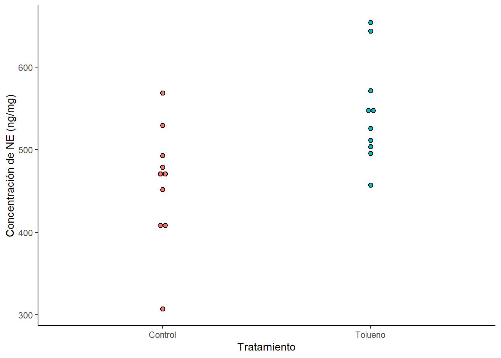

Lección 5 Inferencia de las medias
En esta lección aprenderemos a hacer inferencias, basadas en un modelo de muestreo aleatorio. Usaremos información proveniente de nuestras muestras aleatorias para inferir hechos acerca de la población de la que fueron tomadas. Utilizamos datos para determinar alguna característica de la población original o para medir la precisión de nuestras estimaciones.
Sabemos que al tomar muestras de una población, nuestros datos son susceptibles a un error de muestreo. Cabe aclarar que este error no solamente tiene que ver con la precisión de medición, si no que este error surge por el hecho de que no estamos tomando en cuenta los datos de toda la población.
5.1 Error estándar de la media
El error estándar mide la magnitud del error de muestreo, es decir, la discrepancia entre \(\overline{x}\) y \(\mu\) utilizando la distribución muestral de \(\overline{X}\). La fórmula del error estándar es la siguiente:
\[\begin{equation} SE_\overline{X} = \frac{s}{\sqrt{n}} \tag{5.1} \end{equation}\]
Como podemos ver, esta fórmula es bastante similar a la fórmula de la desviación estándar de la muestra \(\sigma_{\overline{X}} = \frac{\sigma}{\sqrt{n}}\).
Normalmente, la diferencia entre \(\mu\) y \(\overline{x}\) es unos cuantos errores estándar. De hecho, encontramos a \(\overline{x}\) a un error estándar de \(\mu\) bastante seguido. Hay que destacar que el error estándar dependen de la desviación estándar muestral \(s\) y del tamaño de muestra \(n\).
Es importante destacar la diferencia entre el error estándar y la desviación estándar. La desviación estándar describe la dispersión de los datos de una muestra, mientras que el error estándar describe la falta de fidelidad en la media de una muestra como estimación de la media poblacional, debido al error de muestreo. Una forma de disminuir el error estándar es incrementando el tamaño de muestra \(n\).
En las gráficas podemos ver el error estándar o la desviación estándar representadas como intervalos en nuestros puntos. Por ejemplo, las siguientes gráficas representan la desviación estándar en la figura 5.1 y el error estándar en la figura 5.2. Como podemos ver, la dispersión de los datos es mayor al error estándar.
Figura 5.1: Gráfico con la desviación estándar representada en forma de intervalo.
Figura 5.2: Gráfico con el error estándar representado en forma de intervalo.
5.2 Intervalo de confianza para \(\mu\)
Un intervalo de confianza nos sirve para determinar qué tan cerca está de \(\mu\) nuestra media muestral \(\overline{x}\). Ya que no podemos medir de manera directa \(\mu\), utilizamos \(\overline{x}\) adicional al error estándar \(SE_\overline{X}\) como se indica en la fórmula (5.2).
\[\begin{equation} \overline{x} \pm {2}*{SE_\overline{X}} \tag{5.2} \end{equation}\]
¿Por qué utilizar dos veces \(SE_\overline{X}\)? Porque al utilizarlo sabemos que el 95% de las veces \(\mu\) se encontrará en este intervalo. Si utilizáramos solamente un \(SE_\overline{X}\) solamente estaríamos seguros de que \(\mu\) se encuentra en este intervalo el 68% de las veces. Esta idea está basada en la distribución muestral de \(X\) que vimos en la lección anterior. Al estandarizar nuestra variable \(X\) y transformarla en valores \(Z\), lo que buscamos es un área de 0.95. Estos valores Z corresponden a -1.96 como límite inferior y 1.96 como limite superior.
\[\begin{equation} P({-1.96}<{Z}<1.96) = 0.95 \\ P({-1.96}<{\frac{\overline{X}-\mu}{\sigma/\sqrt{n}}}<1.96) = 0.95 \\ P({-1.96\times{\sigma/\sqrt{n}}}<{{\overline{X}-\mu}}<1.96\times{\sigma/\sqrt{n}}) = 0.95 \\ P({-\overline{X}-1.96\times{\sigma/\sqrt{n}}}<{-\mu}<-\overline{X}1.96\times{\sigma/\sqrt{n}}) = 0.95 \\ P({\overline{X}-1.96\times{\sigma/\sqrt{n}}}<{\mu}<\overline{X}1.96\times{\sigma/\sqrt{n}}) = 0.95 \\ \end{equation}\]
A partir de este despeje obtenemos la fórmula para un intervalo de confianza que contendrá a \(\mu\) el 95% de las veces.
\[\begin{equation} \overline{X} \pm 1.96\frac{\sigma}{\sqrt{n}} \tag{5.3} \end{equation}\]
Si en este caso, cambiamos \(\sigma\) por \(s\), podemos calcular el intervalo de confianza para nuestra muestra. William Sealy Gosset, quién publicó sus hallazgos bajo el seudónimo de Student, descubrió un método para preservar la interpretación del 95% y desde entonces este método lleva su seudónimo. Básicamente, si la muestra proviene de una población normal, y si remplazamos \(\sigma\) del intervalo por \(s\), la interpretación del 95% se puede preservar utilizando la nueva cantidad denotada como \(t_{0.025}\) y que está relacionada con una distribución conocida como distribución \(t\) de Student.
5.2.1 Distribución \(t\) de Student
La distribución \(t\) de Student es una distribución teórica continua, usada para distintos propósitos en estadística, por ejemplo, para la construcción de intervalos de confianza. La distribución depende de una cantidad conocida como grados de libertad o df. La forma de una distribución \(t\) de Student es de campana, similar a la distribución normal, pero con una desviación estándar mayor. Conforme los grados de libertad aumentan, la curva de una distribución \(t\) de Student se asemeja más a una curva normal (podría decirse que una curva normal es una curva \(t\) de Student con \(df = \infty\)). En la figura 5.3 podemos ver como la forma de una distribución \(t\) de Student cambia conforme los \(df\) aumentan. La línea punteada es una curva con distribución normal.
Figura 5.3: Curvas con distribución t de Student y cómo cambian dependiendo de los df.
La cantidad \(t_{0.025}\) se conoce como valor crítico al 5% de dos colas de una distribución \(t\) de Student. El área entre \(-t_{0.025}\) y \(t_{0.025}\) contiene el 95% del área de la curva. Es decir el área debajo de \(-t_{0.025}\) y encima de \(t_{0.025}\) suman en total 5% como se ve en la figura 5.4.
Figura 5.4: Valores críticos de una distribución t de Student
Existen tablas de distribución \(t\) de Student que se utilizan para encontrar los valores críticos acorde con nuestros grados de libertad. Al igual que la distribución binomial y normal, R viene con funciones para la distribución \(t\) de Student.
Estos son los siguientes:
-dt() nos da un valor de densidad en determinado punto de la distribución de \(t\) (valor puntual de la función de densidad).
-pt() nos da un valor de densidad acumulado hasta cierto punto en la distribución de \(t\) (área debajo de la curva).
-qt() toma el valor de densidad que le ponemos como primer argumento y nos da como regreso un número cuya densidad acumulada empate con el valor de densidad ingresado.
-rt() genera cierta cantidad de número aleatorios de acuerdo al valor de densidad.
Sin embargo en este caso, en lugar de contar con el argumento n para el tamaño de muestra, contamos con otro argumento df para los grados de libertad.
Para poder utilizar el método \(t\) de Student, se necesitan cumplir ciertas condiciones:
Las muestras deben de ser aleatorias.
Las observaciones de la muestra deben ser independientes unas de otras.
Si \(n\) es pequeña, la distribución de la población debe ser aproximadamente normal.
Si \(n\) es grande, la distribución de la población no necesita ser normal.
5.2.2 Construcción de un intervalo de confianza para \(\mu\)
El primer paso para construir nuestro intervalo de confianza es elegir nuestro nivel de confianza (generalmente es 95% pero esto no quiere decir que siempre tenga que ser así). Si quisiéramos un nivel de confianza de 90% utilizamos un valor crítico de \(t_{0.05}\).
Después tenemos que establecer los límites de nuestro intervalo utilizando la siguiente fórmula (para intervalos con 95% de confianza):
\[\begin{equation} \overline{x} \pm t_{0.025}\frac{s}{\sqrt{n}} \tag{5.4} \end{equation}\]
Como vimos, el valor crítico de \(t\) es determinado por los grados de libertad. Estos se calculan utilizando las siguiente fórmula:
\[\begin{equation} df = n - 1 \tag{5.5} \end{equation}\]
¿Por qué se calculan así los grados de libertad? Bueno, las desviaciones (\(x_i - \overline{x}\)) deben de sumar 0 en total, por lo que solamente una (\(n - 1\)) de estas desviaciones puede variar libremente.
Ejemplo: Una muestra del área de las alas obtenida de una población de la Mariposa Monarca (Danaus plexippus) de 14 ejemplares tiene una media \(\overline{x} = 32.8143cm^2\) y una desviación estándar \(s = 2.4757 cm^2\). Sabemos que los datos provienen de una población con distribución normal. ¿Cuál sería el intervalo de confianza al 95% para esta muestra?
El primer paso es calcular los grados de libertad.
\[\begin{equation} df = n - 1 = 14 - 1 = 13 \end{equation}\]
Como queremos un intervalo de confianza al 95%, utilizamos el valor crítico de \(t_{0.025}\). Para encontrar este valor podemos buscarlo en una tabla de \(t\) o utilizar las funciones de R.
qt(0.025, 13, lower.tail = FALSE)## [1] 2.160369Por lo tanto el intervalo de confianza al 95% para nuestra muestra es
\[\begin{equation} 32.8143 \pm {2.16}{\frac{2.4757}{\sqrt{14}}} \\ 32.8143 \pm {2.16}*{0.6617} \\ 32.8143 \pm 1.4293 \end{equation}\]
De nuevo, esto se puede calcular en R de manera sencilla.
32.8143 + 2.160*(2.4757/sqrt(14))## [1] 34.2434832.8143 - 2.160*(2.4757/sqrt(14))## [1] 31.38512Una forma compacta de escribir el intervalo de confianza es con el límite inferior y superior separados por una coma y entre paréntesis (\(31.4, 34.2\)). Con esta información sabemos entonces que \(31.4cm^2 > \mu > 34.2cm^2\).
Una cosa importante a destacar es que es el propio intervalo de confianza el que es aleatorio. Si consideramos intervalos de confianza al 95%, entonces:
\[\begin{equation} P(La\space siguiente\space muestra\space nos\space dará\space un\space intervalo\space de\space confianza\space que\space contenga\space a\space \mu) = 0.95 \end{equation}\]
Véanoslo de la siguiente manera. Si hiciéramos un meta-estudio y construyéramos un intervalo de confianza a 95% para cada una de las muestras, entonces el 95% de los intervalos de confianza contendrán a \(\mu\). El nivel de confianza (90%, 95%, 99%) es una propiedad del método más que de un intervalo particular.
5.2.3 Intervalos de confianza unilaterales
Este tipo de intervalos de confianza se obtienen cuando solamente nos interesa el límite inferior o superior. Supongamos que queremos construir un intervalo de confianza con un límite inferior al 95%. Mientras que un intervalo de confianza bilateral está basado en usar el valor \(\pm t_0.025\), un intervalo de confianza al 95% de un solo lado (en este caso inferior) solamente se preocupa por el área bajo la curva del lado correspondiente. Ya que \(P(-t_{0.05} > t > \infty) = 0.95\), para un intervalo de confianza unilateral al 95% utilizamos un valor de \(-t_{0.05}\) y establecemos el límite con la siguientes operaciones:
\[\begin{equation} \overline{x} - t_{0.05}{SE_{\overline{X}}} \\ \overline{x} + t_{0.05}{SE_{\overline{X}}} \end{equation}\]
Estas serían las operaciones a realizar para un intervalo de confianza con límite inferior y superior, respectivamente.
5.3 Comparación de dos medias
Cuando queremos comparar dos muestras que provienen de supuestamente poblaciones distintas, podemos realizar las comparaciones utilizando (1) las medias de las muestras; (2) sus desviaciones estándar o; (3) la forma de su distribución.
Para comprar la media de dos muestras, es natural considerar la diferencia entre ellas.
\[\begin{equation} \overline{X}_1 - \overline{X}_2 \end{equation}\]
Esta cantidad es un estimado de la diferencia entre las poblaciones (\(\mu_1 - \mu_2\)). Para caracterizar el error de muestreo de esta estimación, debemos conocer el error estándar entre la diferencia de (\(\overline{X}_1 - \overline{X}_2\)).
La fórmula para el error estándar de (\(\overline{X}_1 - \overline{X}_2\)) es la siguiente:
\[\begin{equation} SE_{(\overline{X}_1 - \overline{X}_2)} = \sqrt{\frac{s^2_1}{n_1} + \frac{s^2_2}{n_2}} \tag{5.6} \end{equation}\]
Otra forma de representar la fórmula es de la siguiente manera
\[\begin{equation} SE_{(\overline{X}_1 - \overline{X}_2)} = \sqrt{SE^2_1 + SE^2_2} \tag{5.7} \end{equation}\]
En donde \(SE_1 = SE_{\overline{X}_1} = \frac{s_1}{\sqrt{n_1}}\) y \(SE_2 = SE_{\overline{X}_2} = \frac{s_2}{\sqrt{n_2}}\).
5.3.1 Intervalo de confianza para \(\mu_1 - \mu_2\)
Podemos comprar las medias de dos muestras construyendo un intervalo de confianza para la diferencia de las medias. La fórmula para un intervalo de confianza de la diferencia de las medias es bastante similar a la usada para construir uno para una muestra.
\[\begin{equation} (\overline{X}_1 - \overline{X}_2) \pm t_{0.025} SE_{(\overline{X}_1 - \overline{X}_2)} \tag{5.8} \end{equation}\]
El valor crítico de \(t_{0.025}\) es determinado a partir de la distribución \(t\) de Student utilizando los grados de libertad que en este caso se calculan de la siguiente manera:
\[\begin{equation} df = \frac{(SE^2_1 + SE^2_2)^2}{SE^4_1/(n_1 - 1) + SE^4_2/(n_2 -1)} \tag{5.9} \end{equation}\]
Otros métodos se basan en obtener los grados de libertad utilizando el número más pequeño entre (\(n_1 - 1\)) y (\(n_2 - 1\)) o \(n_1 + n_2 - 2\).
Ejemplo: Varios biólogos creen que el tórax de las mariposas monarca macho es mayor que el de las hembras. Una muestra de 7 machos y 8 hembras dan los resultados de la tabla 5.1 y la figura 5.5.
| Machos | Hembras |
|---|---|
| 67 | 73 |
| 73 | 54 |
| 85 | 61 |
| 84 | 63 |
| 78 | 66 |
| 63 | 57 |
| 80 | 75 |
| 58 |
En la siguiente figura se puede observar la distribución de los datos para los machos y las hembras. A simple vista parece ser que el tórax de los machos pesa ligeramente más que el de las hebras.
Ahora tendremos que calcular ciertos valores para estos datos, como las medias y desviaciones estándar de cada grupo. Recuerden que para esto podemos usar la librería dplyr. Anteriormente creé una variable llamada Sample2 que contiene los datos que vamos a necesitar.
Sample2## Grupo Peso
## 1 Machos 67
## 2 Machos 73
## 3 Machos 85
## 4 Machos 84
## 5 Machos 78
## 6 Machos 63
## 7 Machos 80
## 9 Hembras 73
## 10 Hembras 54
## 11 Hembras 61
## 12 Hembras 63
## 13 Hembras 66
## 14 Hembras 57
## 15 Hembras 75
## 16 Hembras 58En este caso yo he redondeado los valores a solamente 1 dígito. Ahora para obtener el intervalo de confianza no hace falta que hagamos todas las fórmulas para obtener los grados de libertad, el error estándar, etc. Basta con usar la función t.test() para obtener nuestro intervalo de confianza.
t.test(Peso ~ Grupo,Sample2)$conf.int## [1] -21.353087 -3.325484
## attr(,"conf.level")
## [1] 0.95Como podemos ver nuestro intervalo se encuentra entre (\(3.3, 21.4\)) para un nivel de significancia del 95%. ¿Cómo se interpreta esto? Bueno, de la siguiente manera: de acuerdo a nuestro intervalo de confianza, podemos estar 95% seguros de que la media poblacional del tórax de los machos de Mariposa Monarca (\(\mu_1\)) es más grande que la de las hembras (\(\mu_2\)) por una cantidad tan pequeña como 3.3 mg o tan grande como 21.4 mg.
Si quisiéramos ajustar el nivel de confianza de nuestro intervalo, también podemos hacerlo.
t.test(Peso ~ Grupo,Sample2, conf.level = 0.9)$conf.int## [1] -19.716479 -4.962093
## attr(,"conf.level")
## [1] 0.9Un intervalo de confianza al 90% se encuentra entre (\(5.0, 19.7\)).
Figura 5.5: Peso del torax de Mariposas Monarca macho y hembra (mg)
5.4 Pruebas de hipótesis
¿Qué tan diferentes tienen que ser dos muestras para concluir que las poblaciones de las que vienen son distintas? Una aproximación que podemos hacer es comparar las medias de las dos muestras y ver qué tanto difieren comparándolo con la diferencia que esperaríamos si fuese azar.
5.4.1 \(t\)-test
La idea general es formular una hipótesis para ver si \(\mu_1\) y \(\mu_2\) difieren, y ver la información que tenemos de nuestras muestras para ver si se apoya esta hipótesis. La hipótesis de que \(\mu_1\) y \(\mu_2\) no son iguales es, de manera general, nuestra hipótesis alternativa y se abrevia como \(H_A\).
\[\begin{equation} H_A: \mu_1 \neq \mu_2 \tag{5.10} \end{equation}\]
La antítesis de esta hipótesis se conoce como hipótesis nula y se abrevia como \(H_0\).
\[\begin{equation} H_0: \mu_1 = \mu_2 \tag{5.11} \end{equation}\]
Una estadístico de prueba de hipótesis o estadístico de prueba nos ayuda a corroborar la fuerza de la evidencia presentada en los datos en favor de la \(H_A\).
Ya que la \(H_0\) dice que las medias de las poblaciones son iguales, esperaríamos que esa diferencia fuese 0.
\[\begin{equation} H_0: \mu_1 = \mu_2 \longleftrightarrow H_0: \mu_1 - \mu_2 = 0 \end{equation}\]
La \(H_A\) dice que la diferencia entre las medias no es igual a 0.
\[\begin{equation} H_0: \mu_1 \neq \mu_2 \longleftrightarrow H_0: \mu_1 - \mu_2 \neq 0 \end{equation}\]
La prueba de \(t\) es un método que nos ayuda a elegir entre ambas hipótesis. Para hacer un análisis como este, primero necesitamos computar el estadístico de \(t\).
\[\begin{equation} t_s = \frac{(\overline{x}_1 - \overline{x}_2) - 0}{SE_{(\overline{X}_1 - \overline{X}_2)}} \tag{5.12} \end{equation}\]
Este estadístico mide que tan larga es la diferencia de las medias de la diferencia que esperaríamos si la \(H_0\) fuese verdad \((\overline{x}_1 - \overline{x}_2) - 0\), expresada en relación con el error estándar de la diferencia \(SE_{(\overline{X}_1 - \overline{X}_2)}\) (la cantidad de variación que esperaríamos ver en la diferencias de muestras aleatorias). Veamos un ejemplo.
Ejemplo: Investigadores están interesados en los efectos que produce el tolueno. Para esto, midieron las concentraciones de varios químicos en el cerebro de ratas que habían sido expuestas a tolueno y ratas que no habían sido expuestas (control). En la siguiente tabla se muestran las concentraciones de norepinefrina (NE) de la región de la médula del cerebro. La \(H_0\) de los investigadores es que el tolueno no tiene efecto en la concentración de NE en la médula de las ratas. Por ende, la \(H_A\) es que el tolueno tiene un efecto en la médlua de las ratas.
set.seed(123)
Tolueno <- round(rnorm(10, 540.8, 66.1), 1)
Control <- round(rnorm(10, 444.2, 69.6), 1)
ex1 <- data.frame(Control, Tolueno)| Control | Tolueno |
|---|---|
| 529.4 | 503.8 |
| 469.2 | 525.6 |
| 472.1 | 643.8 |
| 451.9 | 545.5 |
| 405.5 | 549.3 |
| 568.6 | 654.2 |
| 478.9 | 571.3 |
| 307.3 | 457.2 |
| 493.0 | 495.4 |
| 411.3 | 511.3 |

En este caso tenemos que conocer la desviación estándar y la media de nuestros datos. Para esto podemos usar la librería de dplyr.
ex2 <- gather(ex1, Grupo, Conc)
ex3 <- ex2 %>% group_by(Grupo) %>% summarise(n = n(), Media = mean(Conc), SD = sd(Conc), SE = SD/sqrt(n))
ex3## # A tibble: 2 x 5
## Grupo n Media SD SE
## <chr> <int> <dbl> <dbl> <dbl>
## 1 Control 10 459. 72.3 22.9
## 2 Tolueno 10 546. 63.0 19.9Listo, tenemos nuestra media \(\overline{x}\), desviación estándar \(s\) y error estándar \(SE\) para el grupo control y el grupo tratado con tolueno. Ahora procedemos a aplicar la fórmula para encontrar nuestro estadístico \(t\). Primero debemos calcular el error estándar de (\(\overline{X}_1 - \overline{X}_2\)).
\[\begin{equation} SE_{(\overline{X}_1 - \overline{X}_2)} = \sqrt{\frac{63.04^2}{10} + \frac{72.26^2}{10}} \end{equation}\]
Posteriormente aplicaríamos la fórmula para encontrar el estadístico \(t\).
\[\begin{equation} t_s = \frac{(545.74 - 458.72) - 0}{SE_{(\overline{X}_1 - \overline{X}_2)}} \end{equation}\]
Sin embargo, gracias a la función t.test no es necesario que hagamos este procedimiento paso a paso. Por ejemplo, si queremos obtener el estadístico \(t\) simplemente escribimos lo siguiente.
t.test(Conc ~ Grupo, ex2)$statistic## t
## -2.869561Si agregamos $statistic al final de nuestra función obtenemos el estadístico de \(t\) que en este caso es 2.87. Pero, ¿cómo sabemos que tenemos suficiente evidencia para aceptar o rechazar la \(H_A\)? Bueno, si la \(H_0\) es verdadera, la distribución muestral de \(t_s\) se aproximará a una distribución \(t\) de Student con los grados de libertad dados por la fórmula (5.9).
La esencia de de la prueba de \(t\) es ver en qué parte de la distribución \(t\) de Student cae el estadístico \(t_s\). Si cae cercano al centro, entonces la evidencia de los datos es compatible con la \(H_0\). Sin embargo, si \(t_s\) cae en alguna de las colas, entonces, la evidencia de los datos es compatible con la \(H_A\) y una observación como la obtenida no puede explicarse meramente por azar.
Para juzgar si nuestro valor \(t_s\) cae en la cola de la distribución \(t\) de Student, usamos un valor conocido como valor-p. El valor-p puede definirse como el área bajo la curva de una distribución \(t\) de Student en cualquiera de las colas que se encuentra más allá de \(-t_s\) o \(t_s\) como se muestra en la figura 5.6.
Figura 5.6: Valor-p para un valor de \(t_s\).
Otra forma de definir el valor-p es como la probabilidad de obtener un valor tan extremo como el observado si la \(H_0\) fuera verdadera. Para calcular el valor-p necesitamos encontrar el área bajo la distribución \(t\) de Student que se encuentre más allá de \(\pm SE_{\overline{X}_1 - \overline{X}_2}\). Afortunadamente, la función t.test() también nos da el valor-p. Podemos corroborar esto a mano.
t.test(Conc ~ Grupo, ex2)$parameter## df
## 17.6748Como podemos ver, para nuestros datos tenemos 17.67 grados de libertad. Entonces simplemente en la distribución \(t\) de Student buscamos el área correspondiente para un valor \(t_s = -2.87\) con \(df = 17.67\).
pt(2.87, 17.67, lower.tail = F)## [1] 0.005160011pt(-2.87, 17.67, lower.tail = T)## [1] 0.005160011Como en este caso se trata de un valor-p de dos colas, tenemos que sumar el área que obtenemos de la cola inferior y superior, que dan como resultado cerca de 0.0103. Por ende, nuestro \(valor-p = 0.0103\). Afortunadamente no tenemos que hacer esto cada vez que realizamos una prueba de \(t\) en R. Simplemente escribimos $p.value al final de nuestro comando y este nos debería dar nuestro valor-p.
t.test(Conc ~ Grupo, ex2)$p.value## [1] 0.0103277Como podemos ver el valor es aproximadamente igual (puede diferir debido a los decimales). Un valor-p cercano a 1 indica que el valor \(t_s\) se encuentra cercano al centro de la distribución \(t\), que resultaría en una falta de evidencia para la \(H_A\). Un valor-p cercano a 0 indica que el valor \(t_s\) se encuentra en una de las colas de la distribución \(t\), lo que daría evidencia para la \(H_A\).
¿Cómo decidimos qué valores-p muestran evidencia para la \(H_A\)? Para esto necesitamos elegir un nivel de significancia o \(\alpha\). Este valor lo elige, generalmente, quién realiza la decisión acerca del estudio. Valores \(\alpha\) comunes son \(\alpha = 0.1, \space 0.05, \space 0.01\). Si nuestro valor-p es menor o igual a nuestro alfa (\(valor-p \leq \alpha\)) nuestros datos muestran evidencia de una diferencia estadísticamente significativa a favor de \(H_A\). Decimos que la \(H_0\) se rechaza. Si por el contrario el valor-p es mayor que nuestro alfa (\(valor-p \geq \alpha\)), decimos que hay insuficiente evidencia para decir que \(H_A\) es verdad, por lo tanto no se rechaza la \(H_0\).
¿Cómo podemos ver toda está información? Bueno, si no agregamos ningún valor al final de nuestro comando t.test(), obtenemos toda la información condensada.
t.test(Conc ~ Grupo, ex2)##
## Welch Two Sample t-test
##
## data: Conc by Grupo
## t = -2.8696, df = 17.675, p-value = 0.01033
## alternative hypothesis: true difference in means between group Control and group Tolueno is not equal to 0
## 95 percent confidence interval:
## -150.81499 -23.22501
## sample estimates:
## mean in group Control mean in group Tolueno
## 458.72 545.74¿Dónde ponemos o indicamos el \(\alpha\)? La función t.test() no especifica un nivel de significancia y lo deja a manos de quién está realizando el experimento para decidir qué \(\alpha\) utilizar.

Figura 5.7: Gráfico con el valor-p (área sombreada) correspondiente a los datos del ejercicio anterior.
Algo importante a tener en consideración es que, incluso cuando nuestro valor-p no muestra diferencias significativas no quiere decir esto que la \(H_A\) no sea verdadera. Esto nos lleva a los tipos de errores que podemos cometer cuando hacemos pruebas de hipótesis.
Tipo de error I: Cuando decimos que los datos proveen evidencia significativa a favor de la \(H_A\), cuando en realidad \(H_0\) es verdad. Este tipo de error se contrarresta cuando elegimos nuestro \(\alpha\).
Tipo de error II: cuando la \(H_A\) es verdadera, pero no obtenemos suficiente información que demuestre esto. Las muestras con tamaños de muestra pequeños son particularmente vulnerables a este tipo de error. La probabilidad de cometer este tipo de error se conoce como \(\beta\).
La posibilidad de no cometer un error tipo II cuando la \(H_A\) es verdadera se conoce como poder.
\[\begin{equation} Poder = 1 - \beta = P(evidencia \space significativa \space para \space H_{A}) \space si \space H_{A} \space es \space verdad \tag{5.13} \end{equation}\]
5.4.2 \(t\) test de una cola
En caso de que tengamos una hipótesis direccional en la que nos interese solamente una de las dos colas de la distribución de \(t\), realizamos un \(t\) test de una cola.
Las \(H_A\) podrían ser \(H_{A}: \mu_1 > \mu_2\) o \(H_{A}: \mu_1 < \mu_2\). Para este tipo de pruebas lo primero es checar la direccionalidad: ¿Nos interesa la parte inferior o superior de la distribución de \(t\)? Después de eso, ver hacia que lado se desvían los datos. Si nuestros datos se desvían en dirección de la \(H_A\) entonces podemos seguir con el procedimiento.
En este caso, el valor-p de una prueba de \(t\) de una cola será el área que se encuentre más allá de \(t_s\).
Para hacer una prueba de una cola en R simplemente necesitamos cambiar un argumento en t.test(alternative = "greater") o t.test(alternative = "less").
t.test(Conc ~ Grupo, ex2, alternative = "less")##
## Welch Two Sample t-test
##
## data: Conc by Grupo
## t = -2.8696, df = 17.675, p-value = 0.005164
## alternative hypothesis: true difference in means between group Control and group Tolueno is less than 0
## 95 percent confidence interval:
## -Inf -34.38172
## sample estimates:
## mean in group Control mean in group Tolueno
## 458.72 545.74t.test(Conc ~ Grupo, ex2, alternative = "greater")##
## Welch Two Sample t-test
##
## data: Conc by Grupo
## t = -2.8696, df = 17.675, p-value = 0.9948
## alternative hypothesis: true difference in means between group Control and group Tolueno is greater than 0
## 95 percent confidence interval:
## -139.6583 Inf
## sample estimates:
## mean in group Control mean in group Tolueno
## 458.72 545.74Ahora bien, algo importante a recalcar es que existan diferencia significativas no quiere decir que el efecto sea realmente importante. Una prueba de hipótesis solamente responde a la pregunta ¿Hay suficiente diferencia entre ambas muestras como para inferir que vinieron de dos poblaciones distintas? sin embargo no nos dice qué tan grande o importante es la diferencia.
5.4.3 Tamaño de efecto
Para medir la importancia de una diferencia uno debe de considerar la magnitud de la diferencia. El tamaño de efecto de un estudio es la diferencia entre \(\mu_{1}\) y \(\mu_{2}\), en relación con la desviación estándar de una de las poblaciones.
\[\begin{equation} Tamaño \space de \space efecto = \frac{|{\overline{x}_1-\overline{x}_2}|}{\sigma} \tag{5.14} \end{equation}\]
Los resultados están dados en desviaciones estándar y el valor se conoce como d de Cohen. Para calcular la d de Cohen en R necesitamos un paquete estadístico llamado effsize y la función cohen.d().
library(effsize)
cohen.d(Conc ~ Grupo, data = ex2, pooled_sd = F)##
## Cohen's d
##
## d estimate: -1.283307 (large)
## 95 percent confidence interval:
## lower upper
## -2.3150540 -0.2515596La ventaja de esta función es que nos dice si nuestro tamaño de efecto es grande o pequeño.
Figura 5.8: Diferencias entre las medias de ambas muestras utilizadas en el ejercicio anterior.
5.4.4 Prueba de Wilcoxon-Mann-Whitney
También es utilizada para comprar dos muestras. A diferencia de la prueba de \(t\), incluso cuando las distribuciones de las poblaciones no son normales. Este tipo de pruebas no se enfocan en un parámetro particular como la media o la mediana, por esta razón se conocen como pruebas no paramétricas.
En el caso de esta prueba, una \(H_0\) generalmente empleada es que las distribuciones de \(X_1\) y \(X_2\) son iguales, y la \(H_A\) es que la distribución de \(X_1\) es distinta a la distribución de la población \(X_2\).
Esta prueba es recomendable aplicarla cuando tenemos datos que no se pueden transformar a una distribución normal aunque realicemos transformaciones (como logaritmos u otra transformación). El estadístico de esta prueba se denota como \(U_s\) y mide el grado de separación entra ambas muestras.
Lo primero es acomodar los datos en orden, de menor a mayor para ambas muestras.
Posteriormente determinamos \(K_1\) y \(K_2\). Para \(K_1\), contamos el número de observaciones en la muestra 2 que son más pequeñas que la muestra 1. Si hay observaciones que sean iguales para ambas muestras, se cuenta como 1/2 punto. Luego contamos para \(K_2\) el número de observaciones en la muestra 1 que son menores que la muestra 2 y de igual forma, 1/2 si hay alguna observación con valor igual.
Para corroborar si nuestros cálculos son correctos la suma de \(K_1\) y \(K_2\) debe ser igual al producto de \(n_1 * n_2\).
El estadístico \(U_s\) va a ser el más grande de los dos \(K_1\) o \(K_2\).
Para encontrar el valor-p se utilizan tablas de U. Aunque en
Res más sencillo, utilizando la funciónwilcox.text().
Ejemplo: En un estudio farmacéutico, investigadores midieron la concentración de dopamina en el cerebro de seis ratas expuestas a tolueno y seis ratas que funcionaron como control. Las concentraciones se muestran en la tabla 5.3.
Tolueno1 <- c(3420, 2314, 1911, 2464, 2781, 2803)
Control1 <- c(1820, 1843, 1397, 1803, 2539, 1990)
Dopamina <- data.frame(Tolueno1, Control1)
|
|
Dopamina <- gather(Dopamina, Tratamiento, Concentracion) #Organizamos los datos de manera que se puedan trabajar.
wilcox.test(Concentracion ~ Tratamiento, data = Dopamina)##
## Wilcoxon rank sum exact test
##
## data: Concentracion by Tratamiento
## W = 4, p-value = 0.02597
## alternative hypothesis: true location shift is not equal to 0El valor \(W\) es equivalente al estadístico \(U_s\). En este caso vemos que en nuestro ejemplo tenemos diferencias significativas entre ambos tratamientos ya que el \(valor-p < 0.05\). Eso claro, siempre que elijamos un \(\alpha = 0.05\).
5.5 Comparación de muestras pareadas
En esta ocasión vamos a considerar dos muestras que no son independientes entre sí, si no que se encuentran pareadas. En un diseño pareado, las observaciones de (\(X_1, X_2\)) ocurren en pares. Esto quiere decir que las observaciones tienen más en común entre sí que con otros pares.
5.5.1 Prueba de \(t\) pareada
Cuando tenemos datos pareados, cambiamos un poco el enfoque. En lugar de considerar a \(X_1\) y \(X_2\) por separado, consideramos su diferencia \(D\).
\[\begin{equation} D = X_1 - X_2 \tag{5.15} \end{equation}\]
Cuando tenemos datos pareados, son las diferencias en sí lo que queremos registrar. La media de \(D\) es \(\overline{D}\) y de igual manera se obtiene como una diferencia entre las medias de ambas muestras.
\[\begin{equation} \overline{D} = \overline{X}_1 - \overline{X}_2 \tag{5.16} \end{equation}\]
Lo mismo con la diferencia entre las medias de la población.
\[\begin{equation} \overline{D_\mu} = \mu_1 - \mu_2 \tag{5.17} \end{equation}\]
Debido a esto podemos decir que la media de la diferencia es igual a la diferencia de las medias. Debido a esto podemos concentrarnos exclusivamente en \(D\). Ya que \(\overline{D}\) es la media de una sola muestra, para obtener el error estándar simplemente aplicamos la fórmula (5.1).
\[\begin{equation} SE_\overline{D} = \frac{s_D}{\sqrt{n_D}} \tag{5.18} \end{equation}\]
Donde \(s_{D}\) y \(n_D\) son la desviación estándar y el tamaño de muestra de \(D\), respectivamente.
Veamos esto con un ejemplo.
Ejemplo: El adenosin monofosfato cíclico (cAMP) es una sustancia que regula la respuesta celular a las hormonas. En un estudio de maduración de ovarios en la rana Xenopus laevis, los oocitos de cada una de las 4 hembras fueron divdidos en dos grupos: un grupo fue expuesto a progesterona y el otro no. Después de 2 minutos, cada grupo fue analizado para encontrar el contenido de cAMP. Los datos se muestran en la siguiente tabla 5.4.
Control <- c(6.01, 2.28, 1.51, 2.12)
Progesterona <- c(5.23, 1.21, 1.40, 1.38)
Datos1 <- data.frame(Control, Progesterona)| Control | Progesterona |
|---|---|
| 6.01 | 5.23 |
| 2.28 | 1.21 |
| 1.51 | 1.40 |
| 2.12 | 1.38 |
Ahora que tenemos nuestros datos, lo primero es encontrar las diferencias, \(d\) entre los datos. Esto lo hacemos muy sencillo agregando una nueva columna $d a nuestra tabla.
Datos1$d <- Control - Progesterona #Encontramos d sacando la diferencia entre nuestros datos.Bien, ahora para poder encontrar la media y la desviación estándar de nuestras muestras de la diferencia \(d\) necesitamos transformar la tabla en un formato que nos permita hacer estos análisis. Afortunadamente la función gather() nos ayuda con eso, que es parte del paquete tidyr.
Datos2 <- gather(Datos1, Grupo, Concentracion)La función gather() nos ayuda a reorganizar los datos para tenerlos de manera en que podamos trabajar con ellos. Ahora con la propia librería de dplyr deberíamos poder encontrar la media, tanto para los tratamientos como para \(d\).
Datos3 <- Datos2 %>%
group_by(Grupo) %>%
summarise(n = n(), Media = mean(Concentracion), SD = round(sd(Concentracion), 3))| Grupo | n | Media | SD |
|---|---|---|---|
| Control | 4 | 2.980 | 2.047 |
| d | 4 | 0.675 | 0.404 |
| Progesterona | 4 | 2.305 | 1.952 |
En este caso tenemos ya la media de la diferencia \(\overline{d}\) y la desviación estándar de la diferencia \(s_D\) así como el tamaño de muestra de la diferencia, en este caso \(n_D\). Nos quedaría calcular el error estándar de la diferencia \(SE_{\overline{D}}\), que en este caso sería.
\[\begin{equation} SE_\overline{D} = \frac{0.404}{\sqrt{4}} = 0.202 \end{equation}\]
Datos3 <- Datos2 %>%
group_by(Grupo) %>%
summarise(n = n(), Media = mean(Concentracion), SD = round(sd(Concentracion), 3), SE = SD/sqrt(n))| Grupo | n | Media | SD | SE |
|---|---|---|---|---|
| Control | 4 | 2.980 | 2.047 | 1.0235 |
| d | 4 | 0.675 | 0.404 | 0.2020 |
| Progesterona | 4 | 2.305 | 1.952 | 0.9760 |
A partir de aquí podemos construir un intervalo de confianza para \(D\). La forma de hacerlo es igual a la que vimos anteriormente.
\[\begin{equation} \overline{d} \pm t_{n_{D}-1, 0.025}SE_\overline{D} \tag{5.19} \end{equation}\]
En donde \(t_{n_{D}-1, 0.025}\) es una constante determinada a partir de la distribución \(t\) de Student, utilizando como grados de libertad la fórmula \(df = n_D - 1\). Intervalos de confianza con otros coeficientes se construyen de la misma manera.
Construir el intervalo de confianza correspondiente es relativamente sencillo. Vamos a utilizar la función t.test() pero con el argumento paired = TRUE.
Datos4 <- data.frame(Control, Progesterona)
Datos4 <- gather(Datos4, Grupo, Concentracion)
t.test(Concentracion ~ Grupo, Datos4, paired = TRUE)##
## Paired t-test
##
## data: Concentracion by Grupo
## t = 3.3387, df = 3, p-value = 0.04443
## alternative hypothesis: true difference in means is not equal to 0
## 95 percent confidence interval:
## 0.0315868 1.3184132
## sample estimates:
## mean of the differences
## 0.675De hecho, de esta manera obtenemos el intervalo de confianza, el valor crítico de \(t\), los grados de libertad, el valor-p, la media de las diferencias \(\overline{D}\). Hay que tener en cuenta que en este caso nuestra hipótesis nula \(H_0\) tiene una connotación distinta. En este caso:
\[\begin{equation} H_0 : \mu_{d} = 0 \\ H_A : \mu_{d} \neq 0 \end{equation}\]
Para nuestro ejemplo, nuestras hipótesis pueden ser las siguientes:
\(H_0\): La media de la concentración de cAMP de los oocitos es la misma tanto con exposición o sin exposición a progesterona.
\(H_A\): La media de la concentración de cAMP de los oocitos es distinta tras exponerse a progesterona a los que no fueron expuestos.
En este caso nuestro \(valor-p < 0.05\) por lo tanto tenemos suficiente evidencia para rechazar la \(H_0\).
Si quisiéramos hacer el cálculo de manera manual, encontrar el valor crítico \(t_s\) se realiza con la siguiente fórmula:
\[\begin{equation} t_s = \frac{\overline{d}-0}{SE_\overline{D}} \tag{5.20} \end{equation}\]
5.5.2 Prueba de signos
El sign test o prueba de signos es un método no paramétrico para comparar dos muestras pareadas. También se basa en las diferencias \(D = X_1 - X_2\). La única información que se utiliza en esta prueba es el signo (positivo o negativo) de cada diferencia.
El primer paso es contar el número de signos positivos \(N_+\) y negativos \(N_-\). El estadístico de la prueba de signos se conoce como \(B_s\) y dependiendo de nuestra hipótesis, \(B_s = N_+\) o \(B_s = N_-\).
Posteriormente calculamos el valor-p. Como el estadístico \(B_s\) sigue una distribución binomial, podemos decir que \(p\) representa la probabilidad de que la diferencia sea positiva o negativa. La distribución nula de \(B_s\) es una distribución binomial con \(n\) = número de muestras y \(p = 0.5\).
Entonces el valor-p para la prueba consiste en la probabilidad de obtener \(B_s\) o más diferencias, positivas o negativas.
Esta prueba es aplicable en situaciones en las que la \(H_0 : P(D \space es \space positiva) = 0.5\) en los que se puede aplicar una distribución binomial. En esta prueba la forma de la distribución no es un factor importante. Para hacer una prueba de signos en R simplemente utilizamos la distribución binomial que vimos anteriormente.
Ejemplo: Un investigador estudia la interacción entre dos subespecies de aves, el Junco de Carolina y el Junco Norteño. Puso a ambos en un aviario y observó el comportamiento durante 45 minutos. Este proceso fue repetido en varios días con distintos pares de individuos. Los resultados se muestran en la tabla 5.7.
Norteno <- c(0, 0, 0, 2, 0, 2, 1, 0)
Carolina <- c(9, 6, 22, 16, 17, 33, 24, 40)
Aves <- data.frame(Norteno, Carolina)| Norteno | Carolina | Signo |
|---|---|---|
| 0 | 9 |
|
| 0 | 6 |
|
| 0 | 22 |
|
| 2 | 16 |
|
| 0 | 17 |
|
| 2 | 33 |
|
| 1 | 24 |
|
| 0 | 40 |
|
dbinom().
2*dbinom(8, 8, 0.5) #Multiplicamos por dos, ya que hacemos una prueba de signos de dos colas.## [1] 0.0078125Como podemos ver, el \(valor-p = 0.008\), por lo tanto el \(valor-p < 0.05\) y aceptamos la \(H_A\) y vemos que hay diferencias significativas entre las dos subespecies en cuanto a la dominancia. También podemos hacer uso del paquete BSDA, `DescTools o signmedia.test con sus funciones correspondientes, como veremos en todos los casos obtenemos un resultado similar.
Diferencia <- Norteno - Carolina #Obtenemos la diferencia de nuestros datos
Diferencia## [1] -9 -6 -22 -14 -17 -31 -23 -40library(BSDA)##
## Attaching package: 'BSDA'## The following object is masked from 'package:datasets':
##
## OrangeSIGN.test(Diferencia, md = 8)##
## One-sample Sign-Test
##
## data: Diferencia
## s = 0, p-value = 0.007813
## alternative hypothesis: true median is not equal to 8
## 95 percent confidence interval:
## -33.925 -8.025
## sample estimates:
## median of x
## -19.5
##
## Achieved and Interpolated Confidence Intervals:
##
## Conf.Level L.E.pt U.E.pt
## Lower Achieved CI 0.9297 -31.000 -9.000
## Interpolated CI 0.9500 -33.925 -8.025
## Upper Achieved CI 0.9922 -40.000 -6.000library(DescTools)
SignTest(Diferencia, mu = 8)##
## One-sample Sign-Test
##
## data: Diferencia
## S = 0, number of differences = 8, p-value = 0.007812
## alternative hypothesis: true median is not equal to 8
## 99.2 percent confidence interval:
## -40 -6
## sample estimates:
## median of the differences
## -19.5library(signmedian.test)
signmedian.test(Diferencia, mu = 8)##
## Exact sign test
##
## data: Diferencia
## #(x!=8) = 8, mu = 8, p-value = 0.007812
## alternative hypothesis: the median of x is not equal to mu
## 92.96875 percent confidence interval:
## -31 -9
## sample estimates:
## point estimator
## -19.5Como podemos ver obtenemos el mismo valor que en nuestro código con la distribución binomial.
5.5.3 Prueba de rangos con signos de Wilcoxon
Esta es una prueba para datos pareados que no siguen una distribución normal. También esta basado en las diferencias de \(D = X_1 - X_2\) y combina las ideas de “mirar a los signos de las diferencias” con “mirar las magnitudes de las diferencias.”
El primer paso para una prueba de rangos con signos de Wilcoxon es calcular las diferencia \(d\) entre los datos pareados. Después de esto, buscamos el valor absoluto de las diferencias \(|d|\).
Después de organizan estas diferencias de las menores a las mayores.
Después de esto regresamos los signos que tenían previamente a los valores absolutos y sumamos los valores con símbolos positivos para formar \(W_+\) y los valores absolutos de los valores con símbolos negativos para formar \(W_-\). El estadístico \(W_s\) es el valor que sea más grande entre \(W_+\) y \(W_-\).
Para encontrar el valor-p se pueden utilizar tablas. En este caso, basta con cambiar un argumento al comando
wilcox.test(paired = TRUE).
Esta prueba se puede llevar a cabo incluso cuando hay información incompleta. La hipótesis es similar al test del Wilcoxon para datos no pareados, \(H_0 : \mu_{D} = 0\).
Ejemplo: En una investigación acerca de posible daño cerebral debido al alcoholísmo, un procedimo de rayos-X conocido como tomografía computarizada (TC) fue utilizado para medir la densidad del cerebro en 11 bebedores de alcohol crónicos. Para cada alcohólico, se selecciono una persona no alcohólica para empatar en edad, sexo, educación, etc.
Alcoholico <- c(40.1, 38.5, 36.9, 41.4, 40.6, 42.3, 37.2, 38.6, 38.5, 38.4, 38.1)
NoAlcoholico <- c(41.3, 40.2, 37.4, 46.1, 43.9, 41.9, 39.9, 40.4, 38.6, 38.1, 39.5)
Densidad <- data.frame(Alcoholico, NoAlcoholico)
Densidad2 <- gather(Densidad, Grupo, Densidad)DiferenciaDensidad <- Alcoholico - NoAlcoholico
Densidad3 <- data.frame(Alcoholico, NoAlcoholico, DiferenciaDensidad)
Densidad3 %>%
knitr::kable("html", align = c("c", "c"), caption = "Diferencia de densidad entre personas alcohólicas y no alcohólicas", col.names = c("Alcohólico", "No Alcohólico", "Diferencia")) %>%
kableExtra::kable_classic(lightable_options = "striped", full_width = F) %>%
column_spec(1:3, width_min = "4cm")| Alcohólico | No Alcohólico | Diferencia |
|---|---|---|
| 40.1 | 41.3 | -1.2 |
| 38.5 | 40.2 | -1.7 |
| 36.9 | 37.4 | -0.5 |
| 41.4 | 46.1 | -4.7 |
| 40.6 | 43.9 | -3.3 |
| 42.3 | 41.9 | 0.4 |
| 37.2 | 39.9 | -2.7 |
| 38.6 | 40.4 | -1.8 |
| 38.5 | 38.6 | -0.1 |
| 38.4 | 38.1 | 0.3 |
| 38.1 | 39.5 | -1.4 |
wilcox.test(Densidad ~ Grupo, Densidad2, paired = TRUE)##
## Wilcoxon signed rank exact test
##
## data: Densidad by Grupo
## V = 5, p-value = 0.009766
## alternative hypothesis: true location shift is not equal to 0Como podemos ver, nuestro valor-p quiere decir que hay diferencias significativas ya que \(valor-p < 0.05\). Si quisiéramos usar una hipótesis unidireccional, podríamos escribir como argumento alternative = "less" para ver si el alcoholismo reduce la densidad del cerebro.
wilcox.test(Densidad ~ Grupo, Densidad2, paired = TRUE, alternative = "less")##
## Wilcoxon signed rank exact test
##
## data: Densidad by Grupo
## V = 5, p-value = 0.004883
## alternative hypothesis: true location shift is less than 0